Engineering emotion.
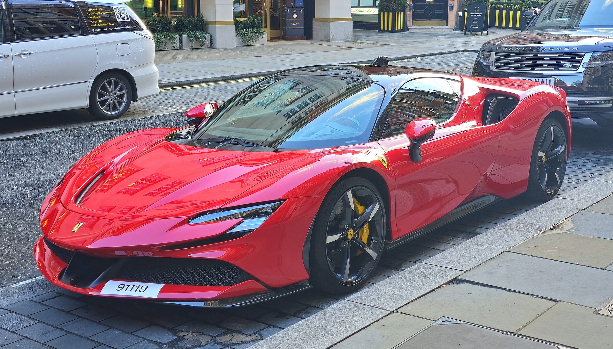
Experience the perfect fusion of innovation, performance and timeless Italian design — engines built to be heard, bodies drawn to be remembered, and a factory in Maranello that has never once built a car by consensus.
Nought to one hundred, seconds0.0
Combined output, horsepower0
Fiorano lap, minutes0:00
Redline, revolutions per minute0
0Revolutions per minute, measured at Fiorano
Four ways to be late for dinner
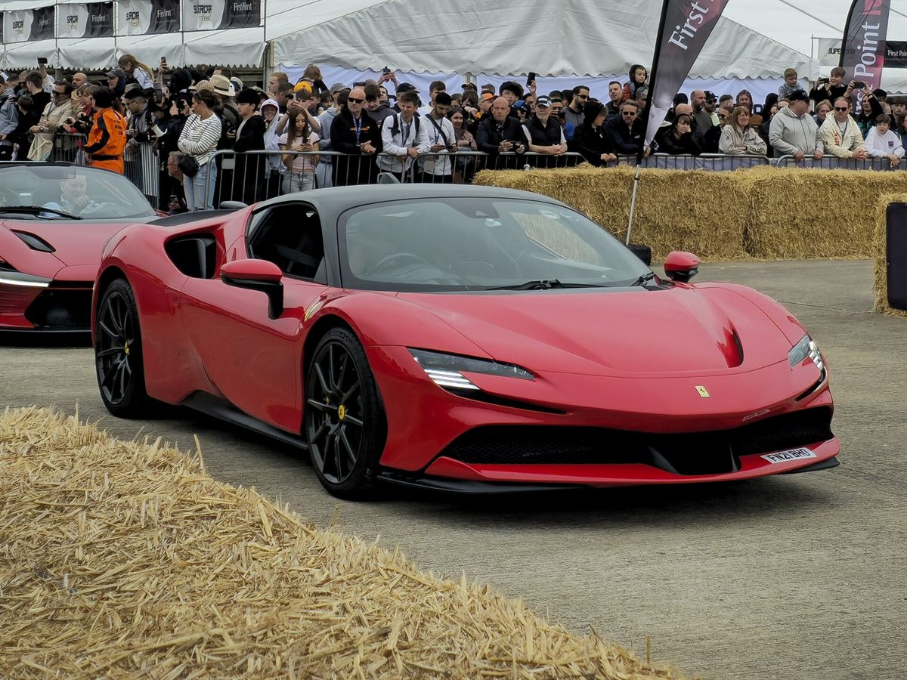
SF90 Stradale
Hybrid V8 · 1,000 cv
Three electric motors and a twin-turbo eight, arranged so that the first metre of a launch is silent and every metre after it is not. The company's first series production plug-in, built around a Formula One control philosophy.
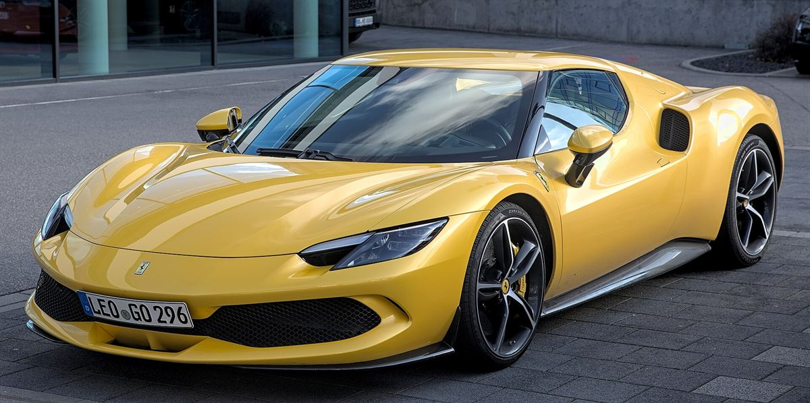
296 GTB
Hybrid V6 · 830 cv
A six with a hundred and twenty degrees between its banks and turbochargers inside the vee — compact, loud in an unfamiliar register, and short enough in the wheelbase to make a mountain road feel like a private commission.
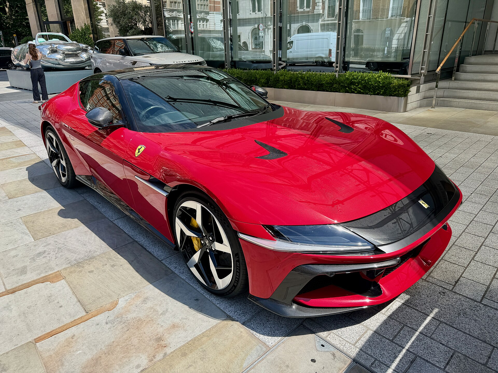
12Cilindri
Naturally aspirated V12 · 830 cv
No turbochargers, no assistance, no apology: twelve cylinders breathing air and revving to nine and a half, in a front-engined body that reads as a deliberate argument with the present.
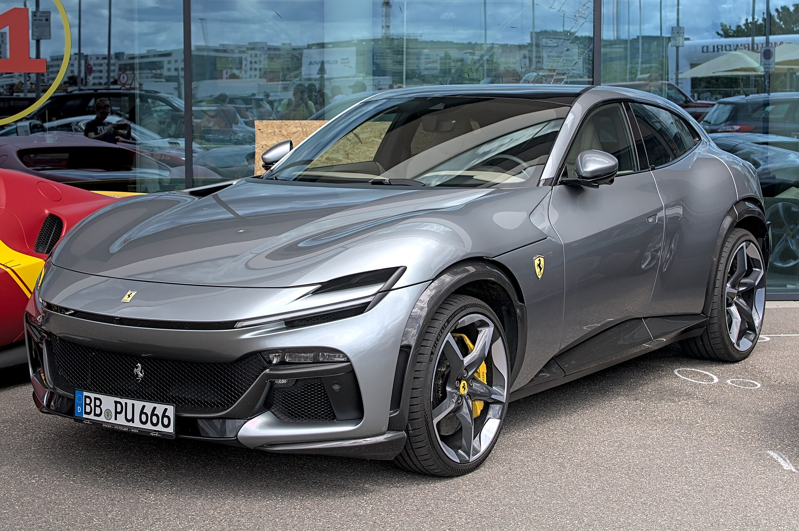
Purosangue
V12 · four doors · 725 cv
Four seats, four doors and an active suspension that refuses to lean, so the family car keeps the twelve and loses none of the argument. Thoroughbred, as the name insists, rather than utility.
To one hundred kilometres an hour, with the electric axle doing the first of the work.
Kilometres an hour, measured at Fiorano and never advertised as a destination.
Years of racing, uninterrupted — the only constructor never to have left the championship.
Factory. Every car leaves through the same gate on Via Abetone Inferiore.
Seventy-nine years, told in eight lines
The 125 S leaves the works at Maranello — twelve cylinders, one and a half litres, a first win within a fortnight.
1962The 250 GTO: thirty-six cars, a body shaped by wind and instinct, and the most valuable silhouette in motoring.
1984The Testarossa's side strakes turn engineering necessity into the decade's most quoted line.
1987The F40 — the last car signed off by the founder, and the first road car to admit it was a race car.
The Enzo brings the paddle shift, the carbon tub and the aerodynamics of a Grand Prix car to the public road.
2013LaFerrari couples the twelve to a kinetic recovery system: hybridisation arrives as a performance argument, not a compromise.
2019The SF90 Stradale takes the name of the ninetieth racing season and a thousand horsepower with it.
2024The F80 returns the halo car to forced induction and active aerodynamics, with Le Mans freshly won again.
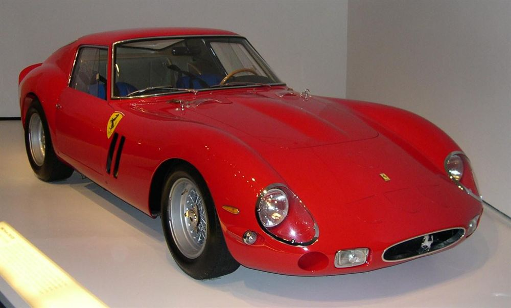
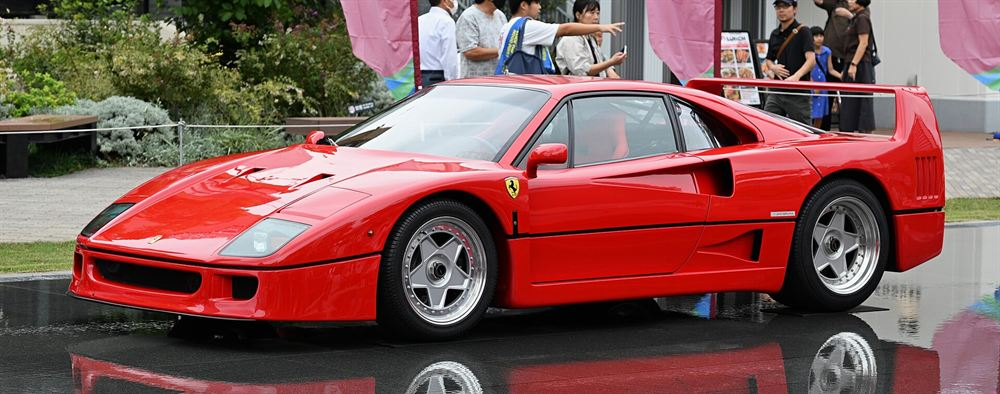
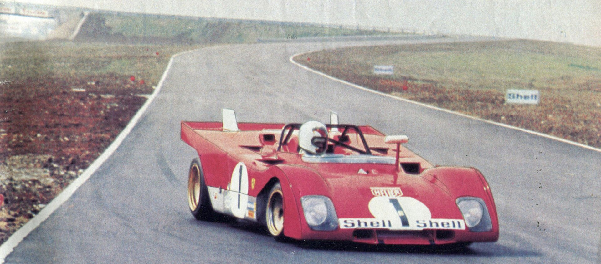
Everything learned on Sunday, delivered on Monday
The tub is autoclaved carbon, laid up by hand in Maranello. Torque vectoring across the front axle, brake-by-wire, a six-dimensional dynamic sensor and a wing that changes its own mind at two hundred: all of it arrived in a race car first, and all of it is measured in tenths at Fiorano before a customer sees it.
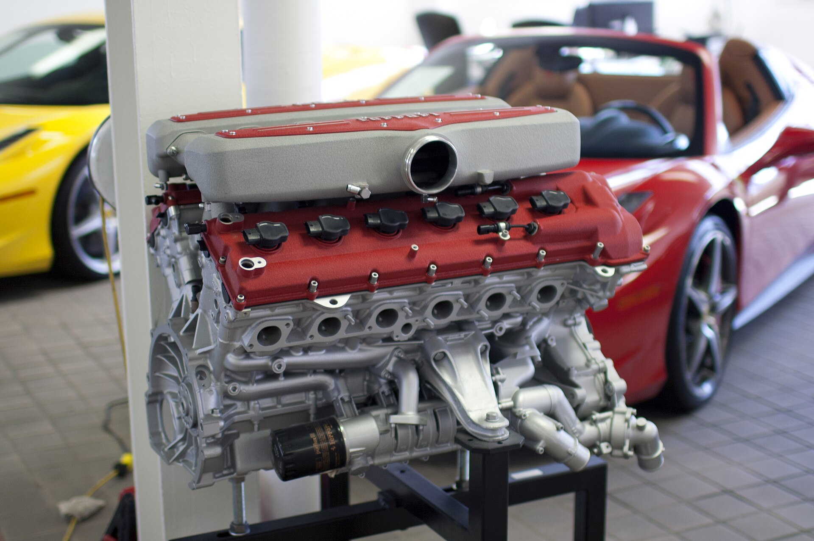
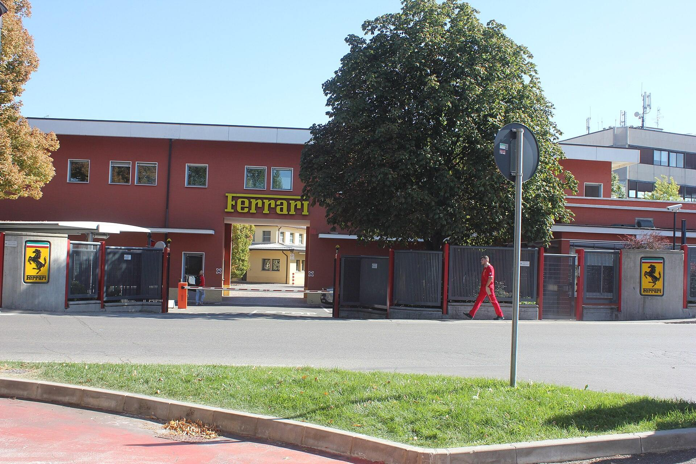
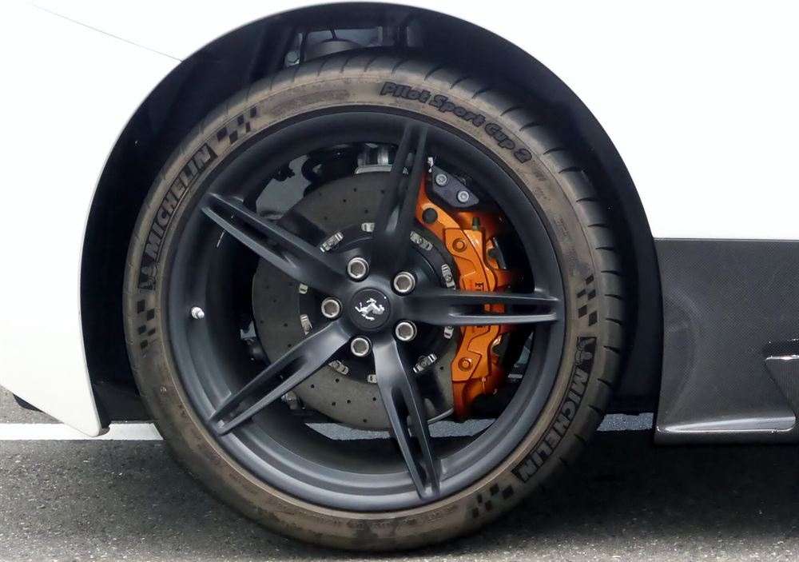
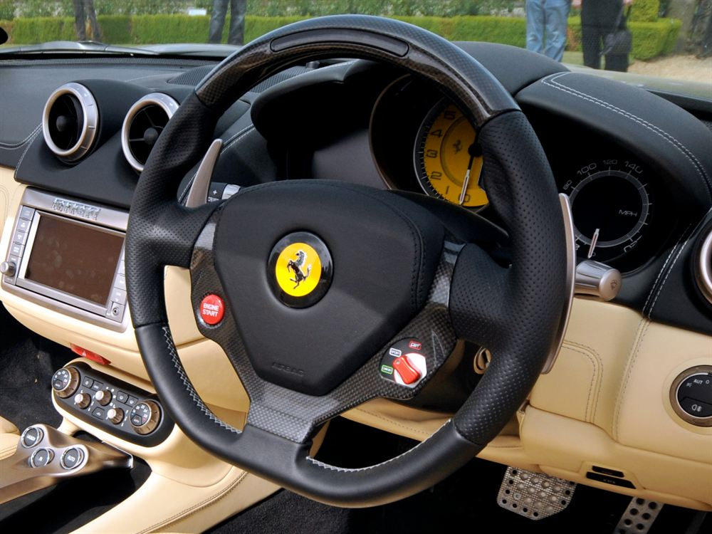
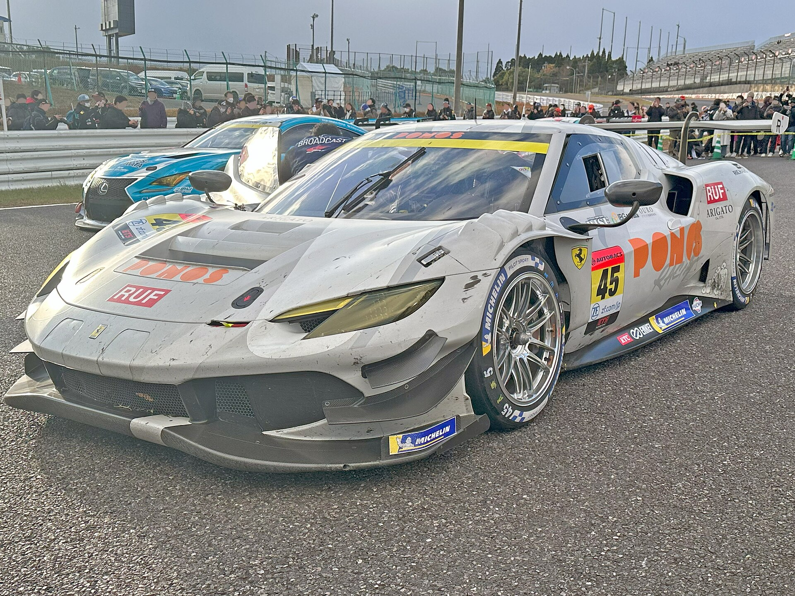
“I have owned faster cars. I have never owned one that made the drive home from the office feel like an occasion.”
“They asked which colour. Then they asked which stitching. Then they asked what the car was for. Nobody has ever asked me that.”
Book a viewing at your nearest official dealer
Configuration, allocation and Tailor Made appointments. We write once a month, in the voice of the workshop rather than the marketing department.
Maranello
Via Abetone Inferiore 4
Allocation & Tailor Made
Milan
Viale Certosa 86
Approved & Classiche
London
Berkeley Square W1J
Showroom & service
Tunis
Les Berges du Lac II
By appointment
Photographs from Wikimedia Commons, printed here as four-colour separations — SF90 Stradale and SF90 profile by Calreyn88 (CC BY 4.0); 296 GTB by Alexander Migl (CC BY-SA 4.0); 12Cilindri by Oleg Yunakov (CC BY-SA 4.0); Purosangue by Alexander-93 (CC BY-SA 4.0); V12 engine by Mr.choppers (CC BY-SA 3.0); 458 Speciale wheel and 296 GT3 at Suzuka by Tokumeigakarinoaoshima (CC0); cockpit by andy_carter (CC BY 2.0); F40 by TTTNIS (CC0); 250 GTO (CC BY-SA 3.0); Fiorano 1972 (public domain); the factory by CAPTAIN RAJU (CC BY-SA 4.0). Ferrari and the Cavallino Rampante are trademarks of Ferrari S.p.A.; this page is an unaffiliated design study.
{kind=link}
{kind=link}
{kind=link}
{kind=link}
{kind=link}
{kind=link}
{kind=link}
{kind=link}
{kind=link}
{kind=link}
{kind=link}
{kind=link}
_in_2018.04.jpg){kind=link}